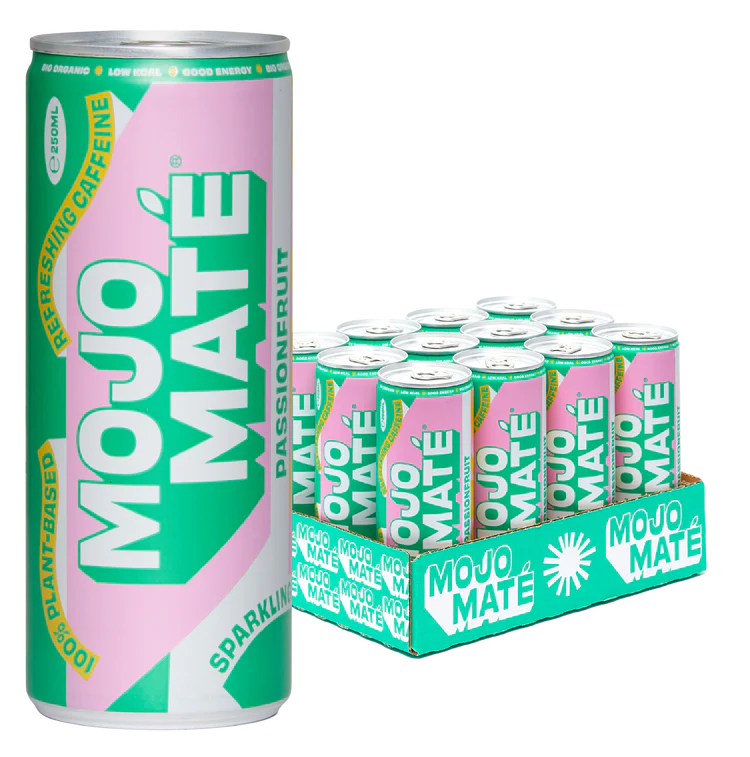

Need Good Energy?
Mojo Maté makes caffeinated drinks from South American maté tea, that bring you good energy and a positive Mojo. Refreshing, 100% natural, and with the same caffeine as a cup of coffee.
Discover more about our organic maté and colorful cans!
Our Drinks
-
Mojo Maté Original | 12 x 250ml | BIO / Organic
-

Mojo Maté Passionfruit | 12 x 250ml | BIO / Organic
-
Mojo Maté Açai Blueberry | 12 x 250ml | BIO / Organic
Yerba mate explained
Yerba Mate, or simply maté, is a plant native to South America. It has a unique flavor and contains lots of natural caffeine.
Maté has been enjoyed as a warm infusion for hundreds of years by (indigenous) South Americans. Especially in Argentina, Brazil and Paraguay: drinking maté is a way of life.
Read more on our page about Yerba Maté!
WHAT WE STAND FOR
Nature üåé
Mojo Maté gets its caffeine from organic maté leaves. These grow on a 100% regenerative plantation in Brazil. The leaves aren’t treated with chemicals and are carefully hand-picked. In every step we aim to work in harmony with nature. Read more here.
People ü§ù
We care about people in all stages of the Mojo Maté process. We buy our maté straight from the source, cutting out the middleman, so we can ensure fair wages and good working conditions for those working with our maté every day. We also want you to feel good. By giving you the good energy to just be yourself, whatever your sexuality, gender or skin color is. We just want you to enjoy the moment.
Creativity üé®
We care about people in all stages of the Mojo Maté process. We buy our maté straight from the source, cutting out the middleman, so we can ensure fair wages and good working conditions for those working with our maté every day. We also want you to feel good. By giving you the good energy to just be yourself, whatever your sexuality, gender or skin color is. We just want you to enjoy the moment.
Get in touch
Interested in Mojo Maté? Want to become a reseller or be part of our team? feel free to reach out at:info@mojomate.nl